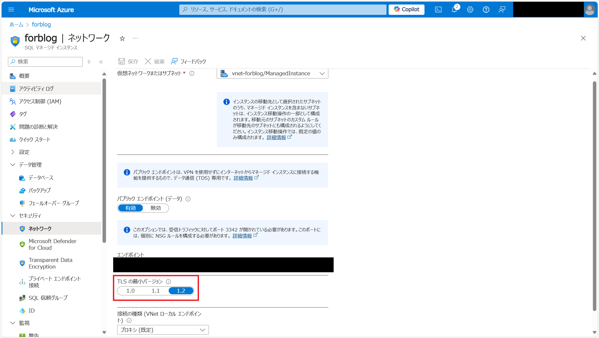

こんにちは。SQL Cloud サポート チームの太田です。
今回の投稿では、2024 年 10 月 31 日に予定されているTLS 1.0/1.1の廃止と通信プロトコルの確認についてご紹介します。
TLS 1.0/1.1の廃止の概要
セキュリティとコンプライアンスの観点から、TLS 1.0/1.1 は既知の脆弱性が存在しており、Azure 上のマネージドサービス全般におきまして、2024 年 10 月 31 日以降はTLS 1.2 以上での接続が必須となります。Azure SQL Managed Instance(SQL MI) への接続においても、TLS を利用し移動中のデータを暗号化しているため、この変更は適用されます。
<関連ドキュメント>
2024 年 10 月 31 日までに終了する TLS 1.0 と TLS 1.1 のサポート
SQL Managed Instance のセキュリティ機能の概要 / トランスポート層セキュリティ (転送中の暗号化)
通信プロトコルの確認方法
こちらの変更への対応に関しては、SQL MIへの接続に TLS バージョン1.2以上をお使いいただくことで問題なく接続が可能となるため、その場合は対応不要です。SQL MI が受け入れる最小の TLS バージョンについては、Azure Portal にて確認が可能です。

SQL MI にて TLS 1.2 が設定されていると TLS 1.2 未満の通信に失敗する事が想定されます。接続時に失敗した通信は以下のようなエラーで失敗するため、 TLS 1.2 未満を利用していると判断できます。
1 | Error 47072 |
<関連ドキュメント>
Azure SQL Managed Instance で最小 TLS バージョンを構成する
なお、SQL MI において、接続されているクライアントのTLS のバージョンを確認する方法はありません。クライアントがどの TLS バージョンで接続を行うかに関しては、クライアントの実装に依存します。したがって、お使いの環境で各クライアントの設定をご確認ください。
クライアント毎の TLS のバージョンを特定する方法例として、 Fiddler を使用する方法があります。
詳細は以下の公開情報に記載されておりますので、ご自身の環境下にてご確認ください。
クライアントによって使用される TLS のバージョンを確認する
Note
この方法はクライアント側で実施され、対象のクライアントが判明している必要があります。
※本情報の内容（添付文書、リンク先などを含む）は、作成日時点でのものであり、予告なく変更される場合があります。